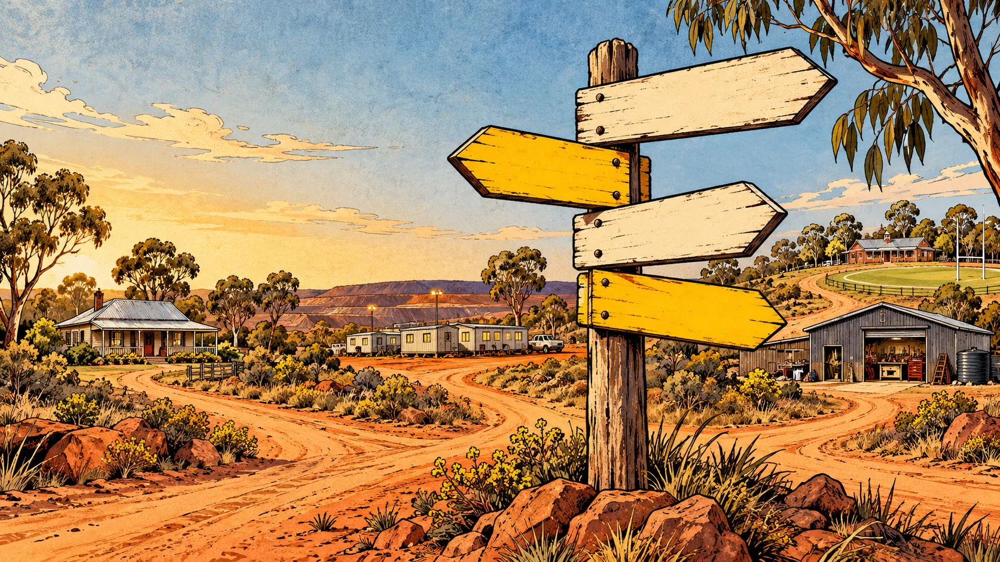

Find your way round
Browse the audiences, explore the source material or see how an idea becomes a useful picture.
The whole place, minus the wandering around.
Choose an edition, browse Daz’s complete original deck, shape a new image brief in Systems or explore the formats and country wildcards in the Product pipeline.
Every page
- Home
Funny picture guides for the habits that make families, mates and co-workers say, “How have you survived this long?”
- Men
The five-minute repair, the borrowed tool and the fridge tub nobody will open. There’s a useful hint in here somewhere. Probably under his keys.
- Women
The handbag excavation, the five-minute voice note and the dog who pre-rinses the dishes. A few rough edges deserve their own illustrated guide.
- Young Crew
Funny, practical picture guides for the everyday things nobody is born knowing.
- Worksites
Workshop posters, mine camps, shared facilities and the familiar moment when enthusiasm gets ahead of thought.
- Original library
The starting material: big headlines, Australian comic humour, mine life, camp life and everyday rough edges.
- Systems
A practical way to collect observations, blend ideas, check the useful point and turn them into pictures that say what we mean.
- Product pipeline
A good yarn could become a cartoon, a sticker, a skit, a club mascot or something stuck to the back of a dunny door. Here are some things worth trying.
- Site map
Browse the audiences, explore the source material or see how an idea becomes a useful picture.
Downloads
Complete structured catalogueReadable catalogue
Original-image provenance
New-image prompts and provenance